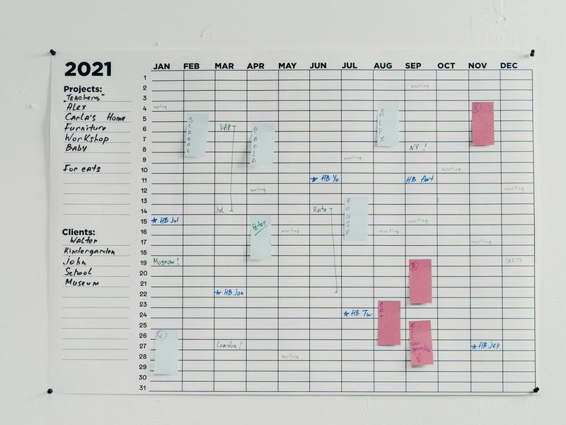
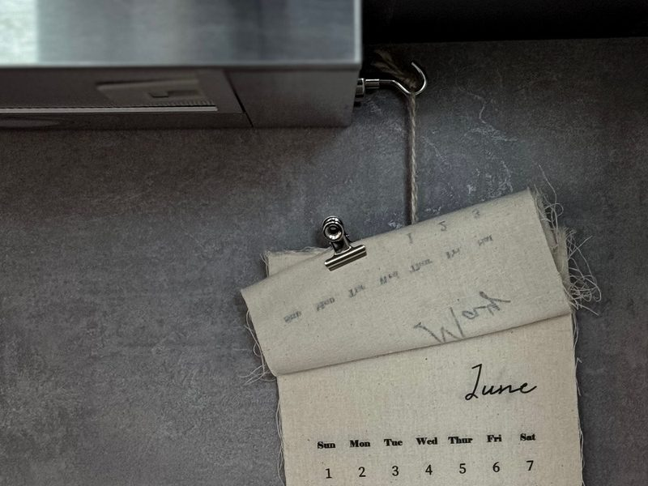
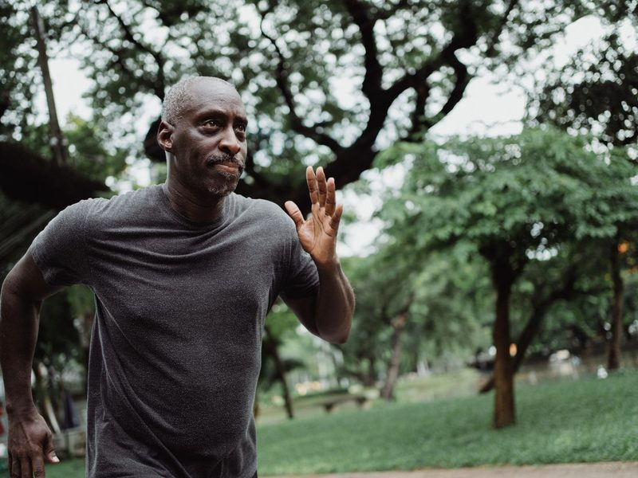
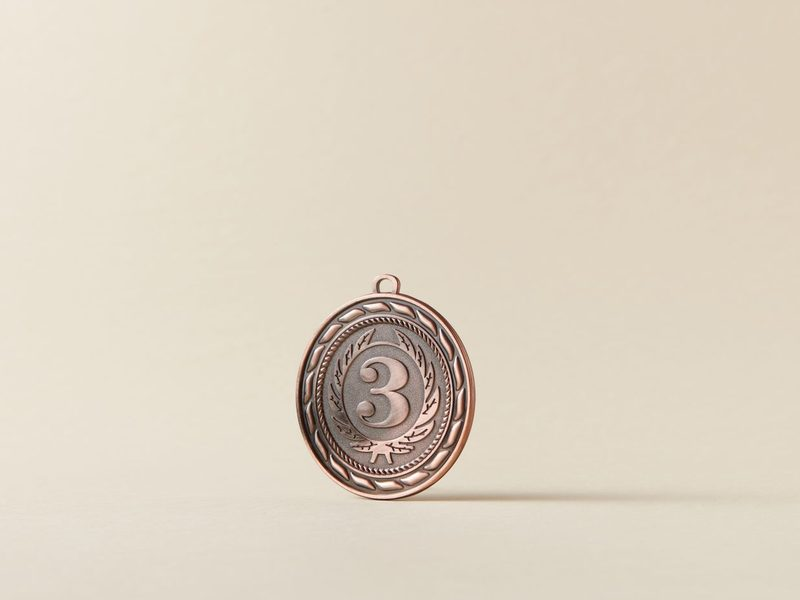
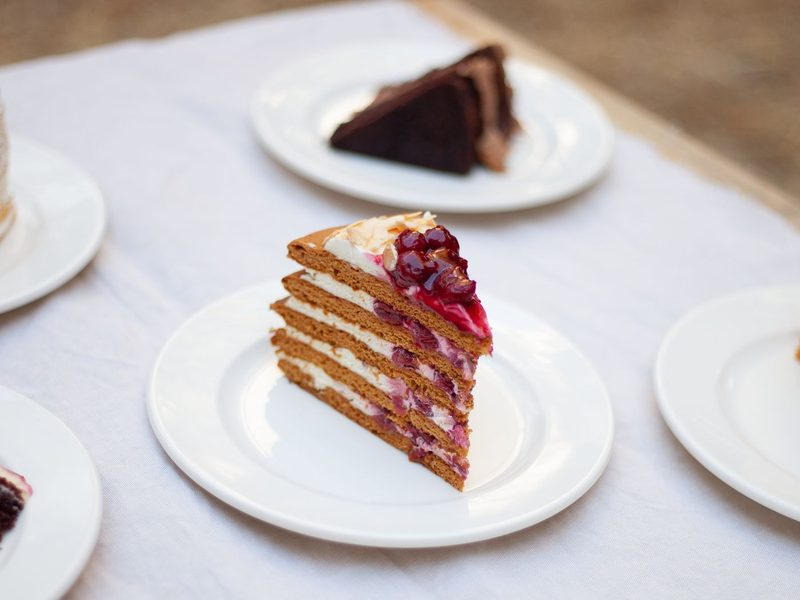
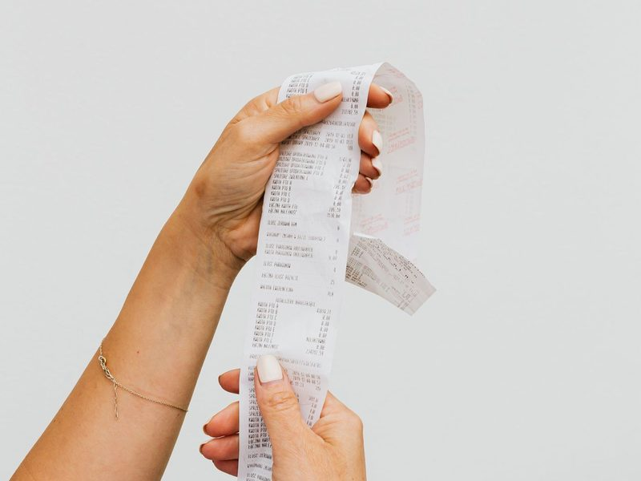

0 到一百萬的數字、第一第二第三，以及表示多少的字，共 51 個。注意 forty、fifteen 的拼法，和 many／much、a few／a little 的差別。
0️⃣
1zeron.
零
複數 zeros
It is zero degrees outside.外面是零度。
1️⃣
2onen.
一
first 第一
I have one older sister.我有一個姊姊。
2️⃣
3twon.
二
second 第二
Two heads are better than one.三個臭皮匠，勝過一個諸葛亮。
3️⃣
4threen.
三
third 第三
Three students are absent today.今天有三個學生缺席。
4️⃣
5fourn.
四
fourth 第四
There are four seasons in a year.一年有四季。
🖐️
6fiven.
五
fifth 第五；Give me five! 擊掌
Give me five!來擊個掌！
6️⃣
7sixn.
六
sixth 第六
My little brother is six years old.我弟弟六歲。
7️⃣
8sevenn.
七
seventh 第七
There are seven days in a week.一個星期有七天。
8️⃣
9eightn.
八
eighth 第八
School starts at eight o'clock.學校八點開始上課。
9️⃣
10ninen.
九
ninth 第九（沒有 e）
People say a cat has nine lives.人家說貓有九條命。
🔟
11tenn.
十
tenth 第十
I have ten fingers.我有十根手指。
12elevenn.
十一
eleventh 第十一
A soccer team has eleven players.一支足球隊有十一名球員。

13twelven.
十二
twelfth 第十二（ve 變 f）
There are twelve months in a year.一年有十二個月。
😨
14thirteenn.
十三
13–19 字尾 -teen
Some people think thirteen is an unlucky number.有些人認為十三是不吉利的數字。
✖️
15fourteenn.
十四
four + teen
Two times seven is fourteen.二乘以七等於十四。
🚌
16fifteenn.
十五
注意是 fif-，不是 five-
The bus comes every fifteen minutes.公車每十五分鐘來一班。
🎉
17sixteenn.
十六
six + teen
My cousin will be sixteen next month.我表姊下個月就滿十六歲。
👧
18seventeenn.
十七
seven + teen
There are seventeen girls in our class.我們班有十七個女生。
🚗
19eighteenn.
十八
只有一個 t
You can get a driver's license at eighteen.十八歲可以考駕照。
20nineteenn.
十九
nine + teen
He bought nineteen roses for his wife.他買了十九朵玫瑰給太太。
➕
21twentyn.
二十
20–90 字尾 -ty
Twenty plus five is twenty-five.二十加五等於二十五。

22thirtyn.
三十
thir-，不是 three-
There are thirty days in June.六月有三十天。
23fortyn.
四十
沒有 u（不是 fourty）
There are forty students in my class.我們班有四十個學生。
🌓
24fiftyn.
五十
fif-，不是 five-
Half of one hundred is fifty.一百的一半是五十。
⏱️
25sixtyn.
六十
six + ty
There are sixty seconds in a minute.一分鐘有六十秒。

26seventyn.
七十
seven + ty
My grandpa is over seventy, but he still jogs.我爺爺七十多歲了，還是會去慢跑。
🏚️
27eightyn.
八十
只有一個 t
This old house is eighty years old.這棟老房子有八十年了。
📕
28ninetyn.
九十
有 e（不是 ninty）
The book costs ninety dollars.這本書九十元。
💯
29hundredn.
百
hundreds of 數以百計的
I got one hundred on the math test!我數學考了一百分！
30thousandn.
千
thousands of 數以千計的
This phone costs ten thousand dollars.這支手機要一萬元。
31millionn.
百萬
millions of 數以百萬計的
Over two million people live in Taipei.超過兩百萬人住在台北。
32firstadj.
第一的
1st；at first 起初
Tom was the first to get to school.湯姆是第一個到學校的。
33secondadj. / n.
第二的；秒
2nd；Wait a second. 等一下
She won second place in the race.她賽跑得了第二名。

34thirdadj.
第三的
3rd
Our team got third place.我們隊得了第三名。
🔚
35lastadj.
最後的；上一個的
last week 上週
December is the last month of the year.十二月是一年的最後一個月。
36alladj.
所有的；全部的
all + 複數名詞
All the students are in the classroom.所有學生都在教室裡。
37a fewadj.
一些（可數）
a few + 複數名詞
I have a few good friends.我有幾個好朋友。
38a littleadj.
一點點（不可數）
a little + 不可數名詞
There is a little milk in the glass.杯子裡還有一點牛奶。
🎵
39a lotadv.
很多；非常
a lot of ＝ lots of 很多的
I like this song a lot.我非常喜歡這首歌。
❓
40anyadj.
任何的；一些
用在疑問句、否定句
Do you have any questions?你有任何問題嗎？
👫
41bothadj.
兩者都
both A and B
Both my parents are teachers.我爸媽兩個都是老師。
🤏
42fewadj.
很少的（幾乎沒有）
可數；few-fewer-fewest
Very few students were late today.今天很少學生遲到。
🍬
43lessadj.
較少的
little-less-least；不可數
We should eat less sugar.我們應該少吃糖。
44littleadj.
小的；很少的
little + 不可數名詞 ＝ 幾乎沒有
The little dog follows me everywhere.這隻小狗到哪裡都跟著我。
45manyadj.
許多的（可數）
many-more-most
There are many coffee shops on this street.這條街上有很多咖啡店。
🍚
46moreadj.
更多的
many／much 的比較級
Can I have some more rice?我可以再多要一點飯嗎？
47muchadj.
許多的（不可數）
How much…? 多少錢？
How much is this T-shirt?這件 T 恤多少錢？
🔢
48numbern.
數字；號碼
phone number 電話號碼
What's your lucky number?你的幸運數字是多少？
49severaladj.
幾個的；數個的
比 a few 多一點
I have been to Japan several times.我去過日本好幾次。

50someadj.
一些
用在肯定句、請求句
Would you like some cake?你要不要吃點蛋糕？

51totaladj. / n.
全部的；總數
in total 總共
The total cost is five hundred dollars.總共是五百元。